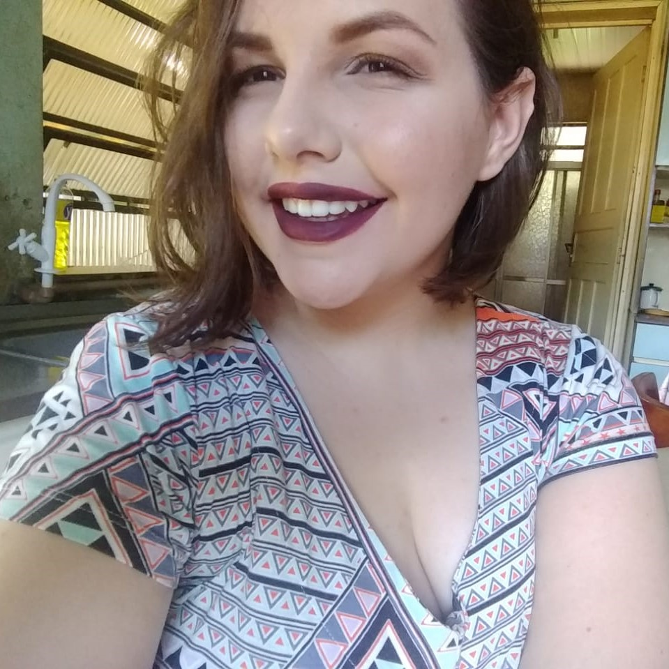

Quem somos nós?
A vendinha de livros é uma pequena empresa de livros, sonhada e projetada há pouco tempo.
Hoje, enfim, fora do papel a empresa busca ir além de suas obrigações.
A empresa foi fundada em 6 de abril de 2021 por 3 mulheres programadoras:
Maitê Nascimento, Mell Matsuda e Rafaela Bobsin.
Maitê Nascimento (07 de setembro de 2003) tem 17 anos, estuda no Instituto Federal do Rio Grande do Sul no campus da cidade de Osório e cursa o ensino médio integrado ao curso de técnico em informática. Já fez parte do projeto de extensão “Programando fácil” e atualmente é bolsista voluntária do projeto de pesquisa “Atividades diferenciadas e inovadoras para computação plugada e desplugada”.
Mell Matsuda (13 de fevereiro de 2003) tem 18 anos, estuda no Instituto Federal do Rio Grande do Sul no campus da cidade de Osório e cursa o ensino médio integrado ao curso de técnico em informática. Anteriormente estudava no campus de Gravataí. No campus Osório participou no desenvolvimento do aplicativo Jogue Limpo com Osório, um projeto de extensão, e atualmente é bolsista do projeto de pesquisa “Atividades diferenciadas e inovadoras para computação plugada e desplugada”.
Rafaela Bobsin (18 de janeiro de 2003) tem 18 anos, estuda no Instituto Federal do Rio Grande do Sul no campus da cidade de Osório e cursa o ensino médio integrado ao curso de técnico em informática. Já fez parte do projeto de extensão “Programando fácil”, do projeto "Incubadora de Redes e Empreendimentos Solidários" e atualmente é bolsista do projeto de pesquisa “Atividades diferenciadas e inovadoras para computação plugada e desplugada”.
